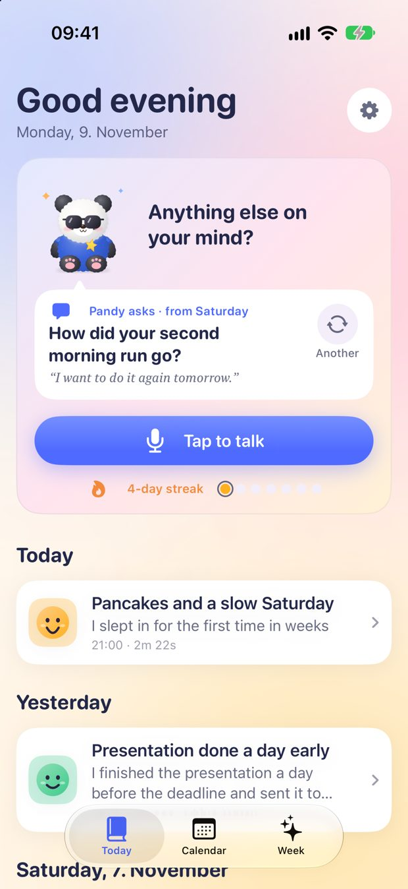
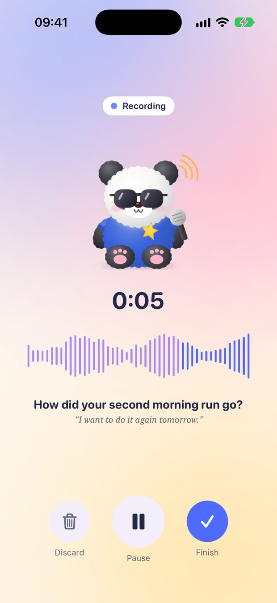
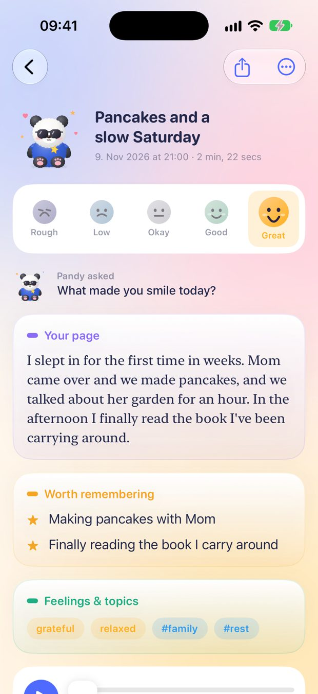
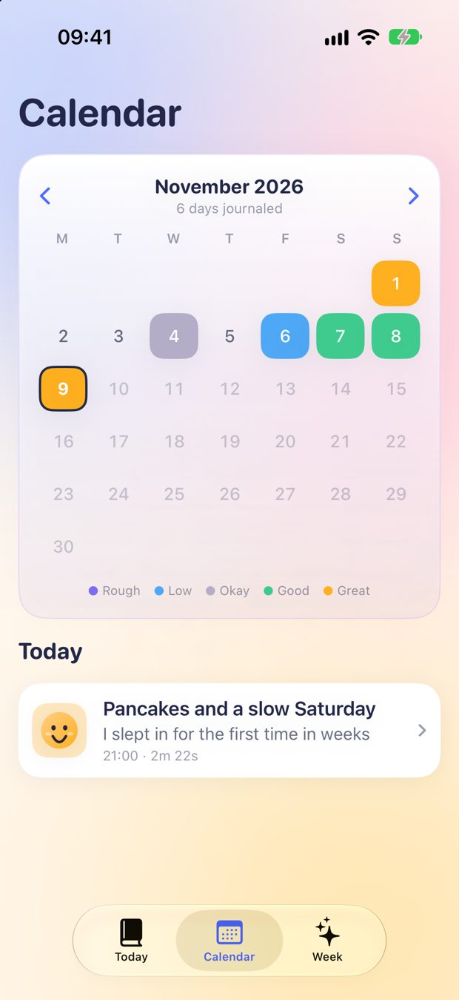
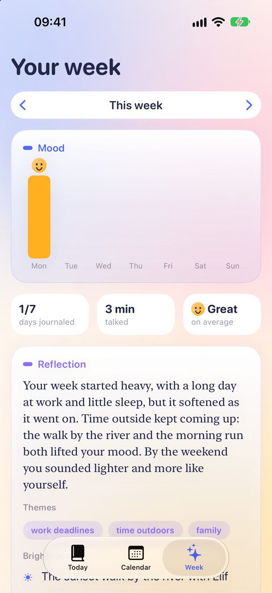
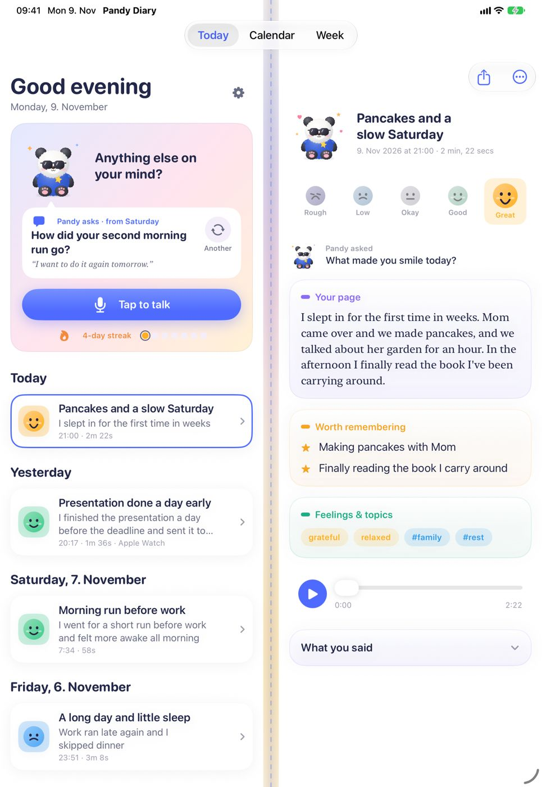
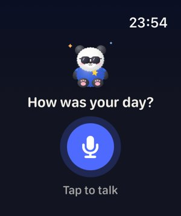
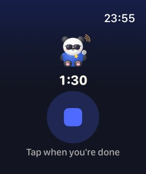

Tell Pandy about your day for a minute. You get a diary page in your own words, the moments worth remembering and how you felt. Next time, Pandy asks how things turned out.
Free for 7 days, then one payment. No subscription.

Mentioned a plan, a worry or something you were waiting for? Pandy follows up next time, about things you actually said, with your own words right underneath.
How did your second morning run go?
I want to do it again tomorrow.
Speak naturally, even mixing languages. Your page is written in the first person, from what you said and nothing else.
A title, a short page and the moments worth remembering, each based on your own words.
Every day gets a mood, feelings and topics. Change any of them with a tap.
A mood calendar, a weekly chart and a short, kind look back at your week.




On iPad and foldable iPhone, your diary opens like a book: entries on one page, the day on the other.

Record on Apple Watch; your iPhone writes the page.


Your diary never leaves your iPhone.